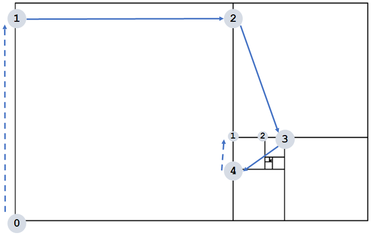

Week 2: Universo¶
This composition is part of the Dear Gen project.
 ## The prompt
## The prompt Universo was announced without any fanfare,
more or less at the same time we told each other that we had posted the
first challenge, Araucária. It was Régis’s first drawing prompt in
project.
The golden spiral and golden rectangle¶
I knew from the beginning that I would not be exploring ideas related
to galaxies and the stars. Instead, I wanted to surprise Régis with
another impression of infinity. I got some inspiration after looking
into antique maps of the world and stars, and wanted to try
something with the golden rectangle and its subdivisions.
``_
The first challenge was to draw the subdivisions. There are some more
sophisticated approaches using
scale() command, but I couldn’t get
my head around those, so I tried to reproduce the sequence from the
largest to the smaller squares in a loop, following the movement of
the subdivisions, in relation the previous one - basically drawing one
square, translating, drawing a smaller square etc. In every step, the
size of the rectangle s is divided by φ, getting smaller and
smaller. The algorithm is as follows:1. Translate to (0,1). This is the starting point (number 0 in the
picture) 2. Translate by (0,-1).
1.1. Draw a square with side
s and calculate s=s/phi 3.
Translate by (φ,0) units. This means 1 unit to the right (positive
X), and same position in Y axis.Repeat 1.1 4. Translate (φ-1,φ) units (going from square 2 to 3 in
the picture)-
Repeat 1.1 5. Translate (-1,1/φ) units (going from 3 to 4). Repeat
1.1 6. Repeat steps 2-5 until
s is very small
I put the movements described above in two arrays, one for each axis, and used the modulus functions in the loop.
The calculationi%4returns the rest of the division ofiby 4, meaning it goes for 0 to 3, then back to 0 (see table below). Using the modulus operand for “looping” is a common and useful technique.
| i | 0 | 1 | 2 | 3 | 4 | 5 | 6 | 7 | 8 | 9 | 10 | … |
|---|---|---|---|---|---|---|---|---|---|---|---|---|
| i%4 | 0 | 1 | 2 | 3 | 0 | 1 | 2 | 3 | 0 | 1 | 2 | … |
//the directions in which the subdvisions "move"
moves_x = new float[]{0, +1*phi, phi -1, -1};
moves_y = new float[]{-1, 0, 1*phi, 1/phi};
float x = 0, y = h;
for (int i=0; i<iterations; i++) {
y += h* moves_y[i%4];
x += h * moves_x[i%4];
universe[i] = new Subdivision(x + h/2, y+h/2, h);
h/=phi;
}
To see the output with only the subdivisions drawn, locate and uncomment `drawGold